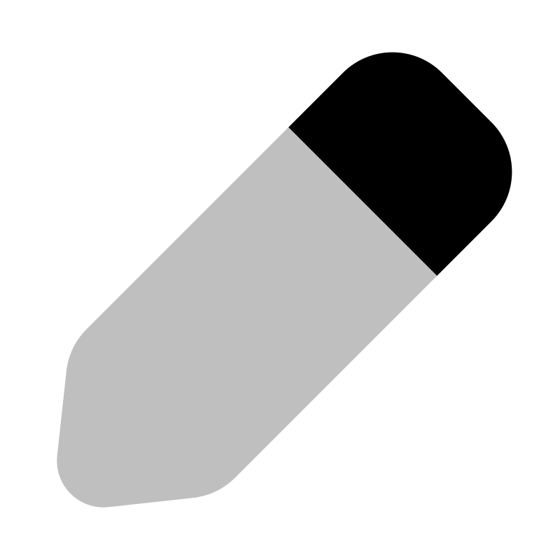

| # | From | To | City | Location Lat | Location Lng | Total Cost | Task Type | Status | Assigned To | Created By | Created on | Action |
|---|---|---|---|---|---|---|---|---|---|---|---|---|
| {{element.id}} | {{element.date_time_from}} | {{element.date_time_to}} | {{element.city}} | {{element.location_lat}} | {{element.location_lng}} | {{element.total_cost || "-"}} | {{element.task_type}} | {{element.status}} | {{element.assigned_to_id}} | {{element.created_by_id}} | {{element.created_at_str}} |  |